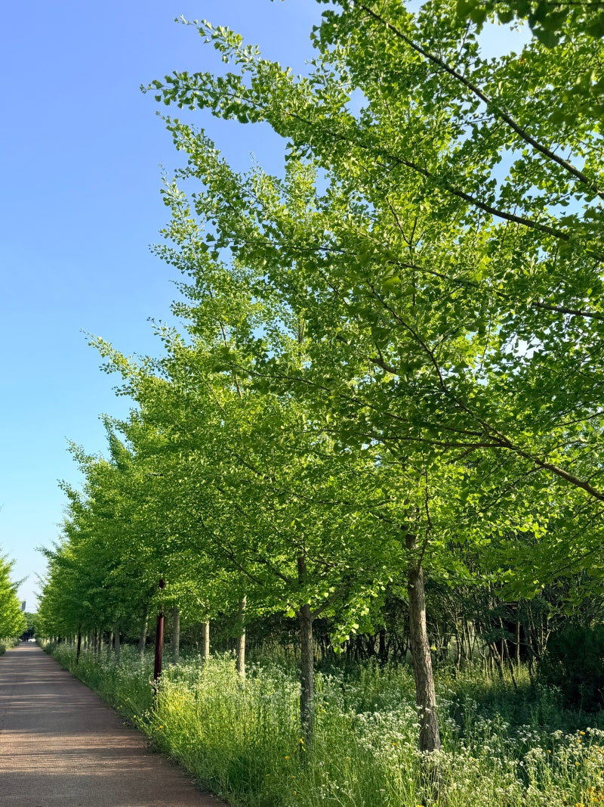
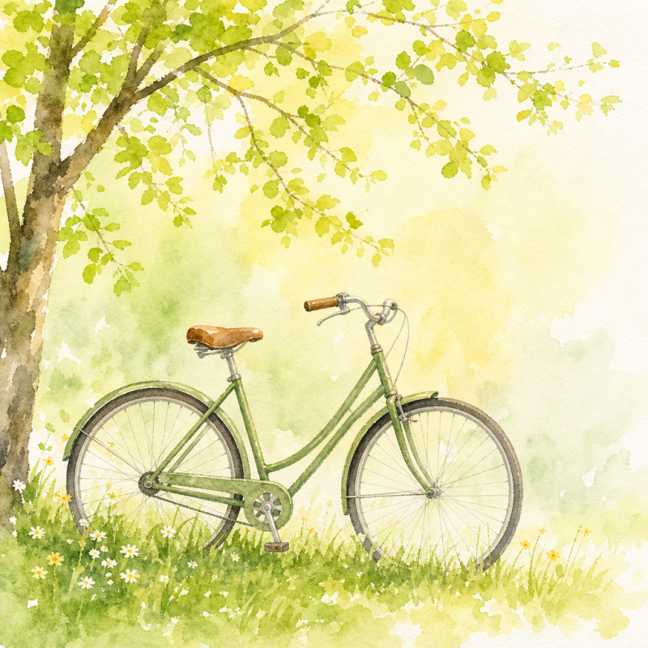
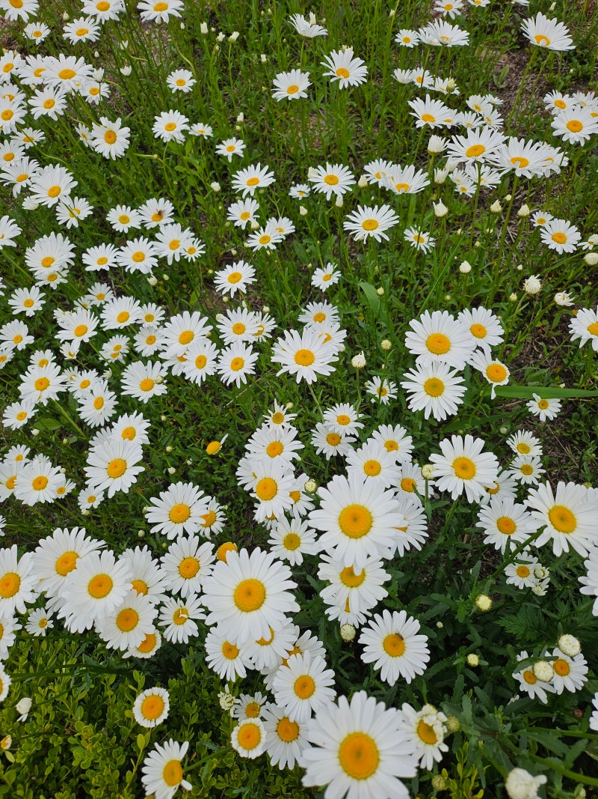
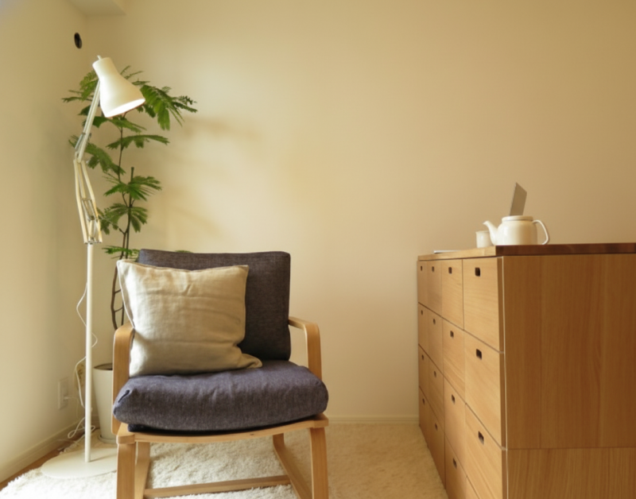
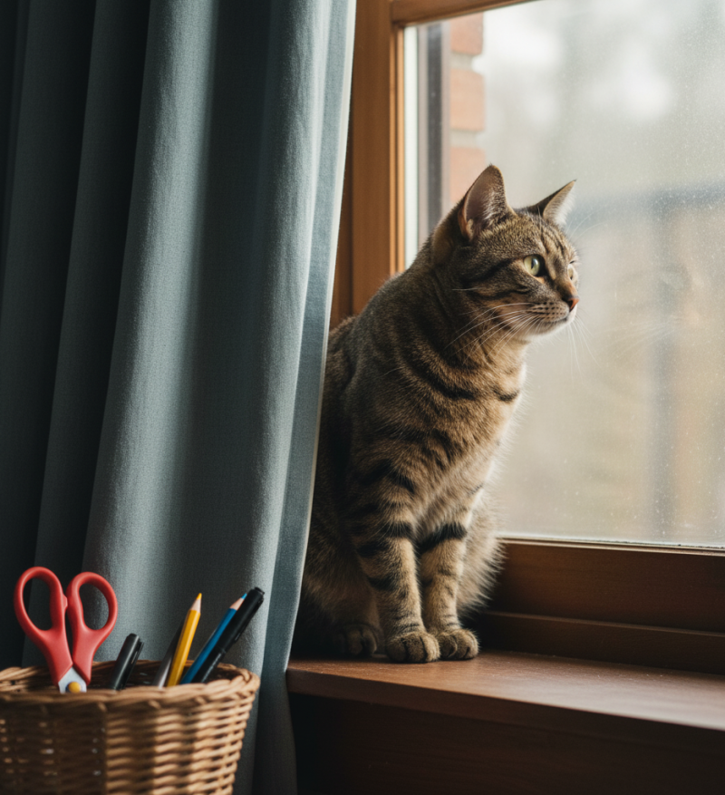

우리는 어릴 때부터 남들보다 빨리, 높이 올라가는 것만이 정답이라고 배웠습니다. 하지만 우리가 그토록 쫓고 있는 그 성공이 과연 내 삶을 행복하게 만들고 있을까요? 오늘은 세상이 정해놓은 잘못된 기준을 내려놓고, 진정한 성공의 의미와 남과 비교하지 않는 삶에 대해 이야기해 보려 합니다.
불공평한 출발선, 비교를 멈춰야 하는 이유
솔직히 말해 세상은 공평하지 않습니다. 누구나 똑같은 환경에서 태어나지 않으며, 출발선 자체가 다릅니다. 살다 보면 나보다 좋은 환경에서 쉽게 앞서가는 사람도 있고, 뛰어난 재능을 가진 사람도 너무 많습니다. 이런 현실 속에서 남과 나를 비교하기 시작하면 우리의 삶은 금세 피곤해집니다. 나보다 잘난 사람 앞에서는 한없이 작아지며 방황하고, 반대로 나보다 못한 사람 앞에서는 우쭐해지곤 하죠. 획일화된 성공의 기준에 나를 억지로 맞추려다 보니, 소중한 시간을 허비하고 진짜 내 삶을 살아가지 못하게 되는 것은 아닐까요?
우리가 오해하고 있는 요셉의 성공 신화
세상적인 기준의 성공을 좇다 보면 우리는 성경의 메시지조차 오해하곤 합니다. 그 대표적인 것이 바로 창세기에 나오는 요셉의 이야기입니다. 우리는 흔히 요셉을 '노예로 팔려 갔지만 결국 애굽의 총리가 된 인간 승리, 흙수저의 성공 신화'로 알고 있습니다. 하지만 구약 신학 논문들과 여러 성경 주석들을 살펴보면, 이는 요셉의 이야기를 완전히 잘못 읽은 것입니다.

창세기 39장을 연구한 신학자들은 요셉에게 쓰인 ‘형통(성공)’의 의미가 세상의 기준과 전혀 다르다고 입을 모읍니다. 성경은 요셉이 보디발의 집에서 비참한 노예 생활을 할 때도, 억울한 누명을 쓰고 빛도 들지 않는 감옥에 갇혔을 때도 "여호와께서 요셉과 함께 하시므로 그가 형통한 자가 되었다"고 기록합니다. 세상의 눈으로 보면 밑바닥으로 추락한 실패자였지만, 하나님이 보시기엔 이미 성공한(형통한) 삶이었습니다.

즉, 성경적 성공이란 높은 지위(총리)에 오르는 결과가 아니었습니다. 내게 주어진 환경이 비록 감옥 같고 억울할지라도, 나를 향한 하나님의 주권을 신뢰하며 오늘 내게 맡겨진 일에 묵묵히 순종하는 '과정' 그 자체입니다. 훗날 총리가 된 것은 요셉이 이룬 성과가 아니라, 생명을 구원하시려는 하나님의 계획이 이루어진 결과일 뿐이었습니다.

영화 일일시호일, 나만의 페이스를 찾는 법
이러한 ‘현재를 살아내는 태도’를 잘 담아낸 작품이 바로 영화 일일시호일입니다. 주인공 노리코 역시 우리와 비슷한 고민을 안고 살아갑니다. 취업도 연애도 술술 풀리는 주변 사람들을 보며 불안해하고, 다도를 배우면서도 자기보다 재능 있는 후배를 보며 열등감에 빠집니다. '이 길이 내 길이 맞나' 흔들리며 모든 것을 그만둘까 고민하죠.
하지만 노리코는 다른 사람을 쳐다보는 대신, 자기 앞의 찻잔에 다시 집중하기로 합니다. 요셉이 감옥 안에서도 묵묵히 하루를 살았듯, 노리코 역시 남들보다 늦고 느리더라도 자신만의 페이스를 되찾고 매일 주어지는 하루를 꾸준히 겪어냅니다. 타인과의 비교를 멈추고 자신의 속도대로 묵묵히 걸어나가는 것, 그 과정 속에서 결국 진정한 의미의 성공과 평안을 얻게 된다는 것을 영화는 잔잔하게 보여줍니다.

남들처럼이 아니라, 나만의 속도대로
남들처럼 살려고 무리할 필요가 없습니다. 세상이 말하는 화려한 성공 기준에 나를 맞추며 더 이상 자신을 괴롭히지 않았으면 좋겠습니다. 나의 재능, 나의 환경, 나만의 속도에 맞춰 한 걸음씩 걸어갈 때 우리는 비로소 자유함과 깊은 안도감을 느낄 수 있습니다. 내 길이 아닌 것 같아 흔들리더라도 다시 중심을 잡고 꾸준히 걷다 보면, 요셉이 그랬듯 우리를 향한 선한 계획이 우리의 삶 속에 자연스럽게 자리 잡을 것입니다.
이제는 다른 사람을 향하던 비교의 시선을 거두고, 안심하며 자신만의 길을 뚜벅뚜벅 걸어나가는 평안한 하루하루가 되기를 바랍니다. 매일매일 나만의 속도로 걷는 오늘이 모여, 여러분의 삶에 진정한 의미의 성공을 선물해 줄 것입니다.